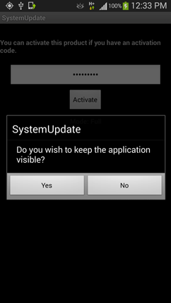

Ocultar el ícono del software

IMPORTANTE
* Esto sólo oculta el ícono del software.
Si desea ocultar el software completamente usted debe rootear el dispositivo antes de instalar Spyphone y luego el software debe ejecutarse en modo Full.
La ejecución en modo Full varía según dispositivo rooteado.